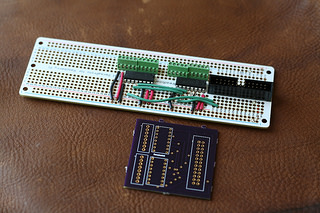

My First PCB
Today I received my PCBs from OSHPark. This is the first PCB I’ve ever designed, so I’m pretty excited, simple as it is. The board is a revised version of our Berrybasket Raspberry Pi data logging board. Last year, when we used this logger with 5th and 6th graders, we wired the hardware onto an Adafruit permaproto. The picture below shows the fully stuffed prototype and the new PCB without any components.

The permaproto was a good compromise between mechanical robustness and rapid prototyping, but I wouldn’t want to make a bunch that way. So I wanted to get some proper boards made, but between my inexperience and the lack of outside pressure, I kept putting it off. More recently, I realized that I’m eventually going to want PCBs for my keyboard glove, and those are going to be middling complicated. I wanted to try out the process with something simpler, and the Berrybasket design, with just one IC (repeated twice) and some connectors, all through-hole, seemed perfect.
After messing around with kicad for a while, including a full schematic, I ended up laying out the board in Upverter. I really like their Octopart connection, which makes it easy to associate parts on the schematics with their data sheets and purchase info. Having schematic, Gerbers, and BOM all at one URL is great for sharing small open hardware projects, where if documentation isn’t easy, it may not happen at all. All my usual reservations about webapps still apply, of course.
Upverter provides few-click PCB manufacturing also, with some options about the price-time tradeoff. I went with OSHPark because they have good reviews, use a known manufacturer, and were cheaper than the cheapest price at Upverter, with better turnaround. OSHPark recognizes the file naming convention that Upverter uses in exporting Gerbers, so that was easy.
Kicad developers, meanwhile, are working hard on a new, better format for components, and packaging a much more extensive and useful set of standard footprints with Kicad. (OK, I like any format that looks like Lisp.) I’m looking forward to revisiting Kicad when a version with these features makes it into Linux distributions.